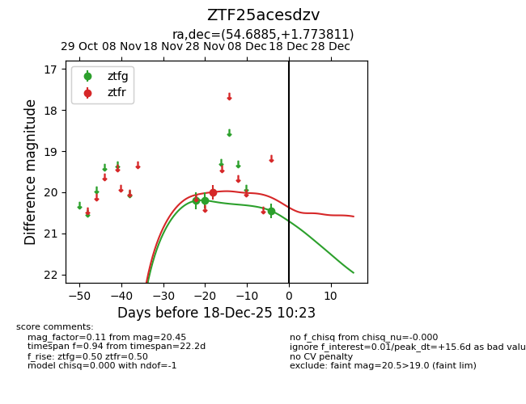
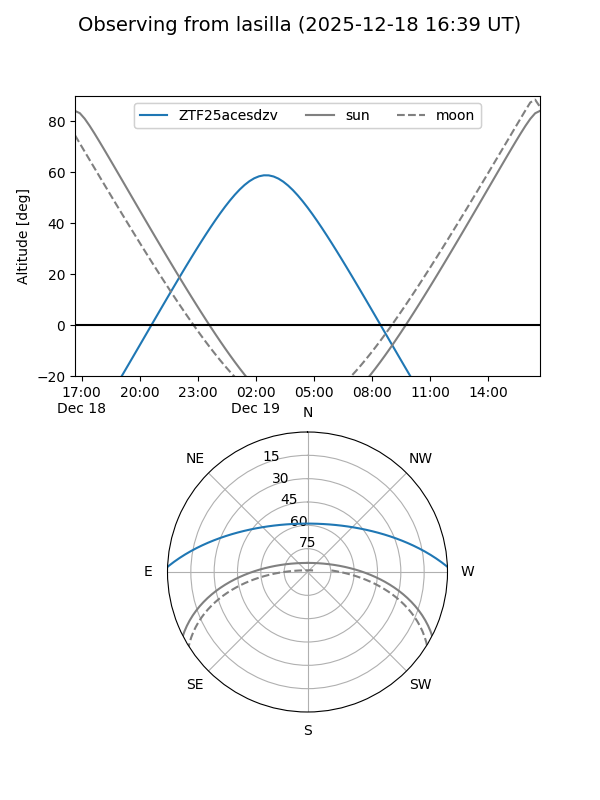
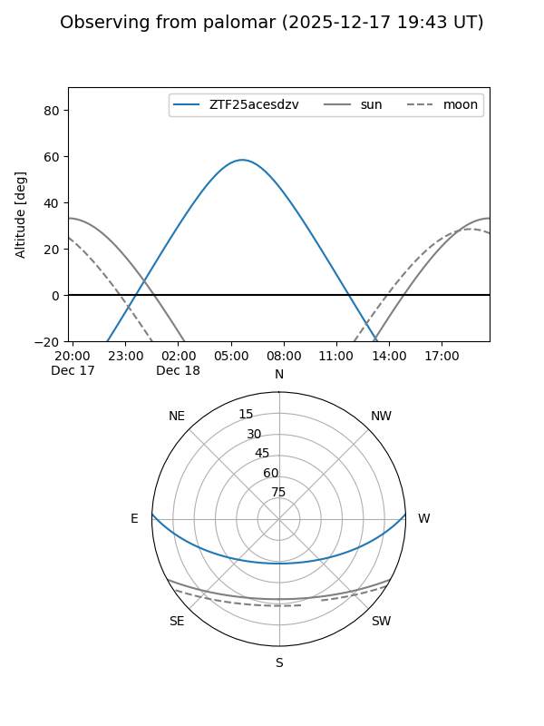

ZTF25acesdzv
Target ZTF25acesdzv at 2025-12-18 11:17
Aliases and brokers:
FINK: fink-portal.org/ZTF25acesdzv
Lasair: lasair-ztf.lsst.ac.uk/objects/ZTF25acesdzv
ALeRCE: alerce.online/object/ZTF25acesdzv
alt names
ZTF25acesdzv (ztf,fink_ztf)
Coordinates:
equatorial (ra, dec) = 54.6885,+1.77381
equatorial (HMS+DMS) = 03:38:45.24,+01:46:25.72
galactic (l, b) = (184.0860,-40.44605)
Photometry
last ztfg=20.45, ztfr=20.00
3 ztfg, 1 ztfr detections
Lightcurve

Visibility


Additional plots